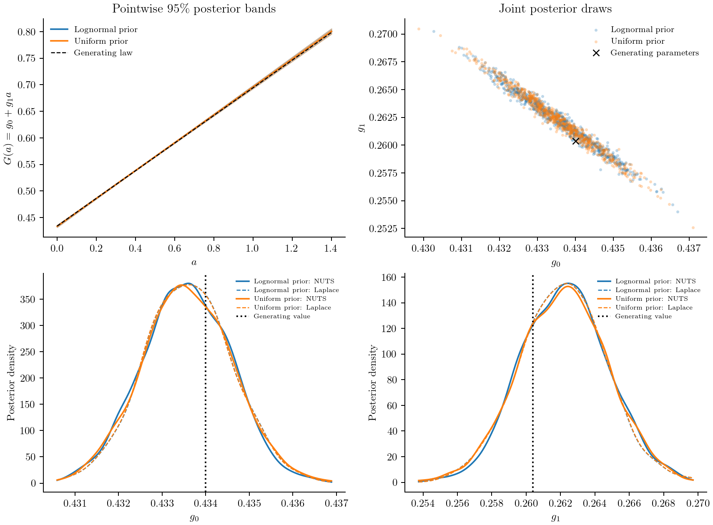
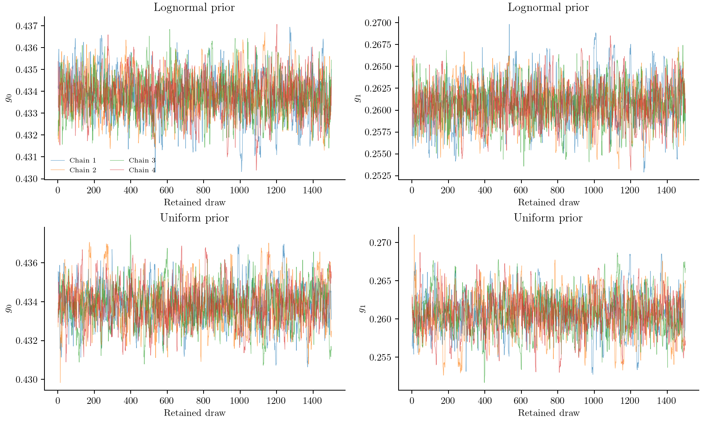

Estimating size-dependent growth
Suppose a particle population is measured several times while it grows. Can we recover how growth depends on particle size? This example answers that question with synthetic data: evaluate a known analytical solution, add nonnegative noisy measurements, and fit the two growth coefficients.
The growth equation and initial density come from Inguva, Schickel and Braatz (2022), Case 2. The noisy measurements and prior choices below are our estimation exercise; they are not experimental data from the paper.
Model and measurements
The number density f follows
\[\frac{\partial f(a,t)}{\partial t} +\frac{\partial[(g_0+g_1a)f(a,t)]}{\partial a}=0, \qquad f(a,0)=50\exp\!\left[-\frac{(a-0.2)^2}{0.0005}\right].\]
Size a is nonnegative, and no particles enter at a=0. We retain the paper's scaled size and time units. The coefficient g₀ has size/time units, while g₁ has inverse-time units. There is no nucleation, aggregation or concentration feedback in this model.
A particle starting at size a₀ reaches
\[a(t)=a_0e^{g_1t}+\frac{g_0}{g_1}(e^{g_1t}-1).\]
The inverse trajectory and the resulting density are
\[a_0(a,t)=ae^{-g_1t}+\frac{g_0}{g_1}(e^{-g_1t}-1),\qquad f(a,t)=e^{-g_1t}f(a_0(a,t),0).\]
Set f=0 when a₀<0. The exponential factor accounts for stretching: particles move to larger sizes and the peak becomes wider and lower.
Generate data with g₀=0.434 and g₁=0.2604. At six times between 0.1 and 1, evaluate f at 281 sizes between 0 and 1.4. Draw each measurement independently from a Gaussian centred on that density, conditioned to be nonnegative:
\[y_{ij}\sim\mathcal N\!\left(f(a_i,t_j;g_0,g_1),\sigma_f^2\right) \ \text{conditioned on }y_{ij}\ge0,\qquad \sigma_f=1.\]
The initial density and noise level are known in this exercise. Only g₀ and g₁ are fitted. These are density measurements, not sampled particle counts; there is no binning, clipping or normalization of the density. Far from zero this is nearly ordinary additive Gaussian noise. Near zero the noise is asymmetric, so its conditional mean exceeds the underlying density. The likelihood accounts for that difference using its normalization factor $\Phi(f/\sigma_f)$. Clipping negative Gaussian draws would instead create an artificial point mass at zero.
value = rand(rng,truncated(Normal(density,sigma),0.0,Inf))using PopulationBalanceModels, Distributions
include(joinpath(pkgdir(PopulationBalanceModels),"examples","estimate_size_dependent_growth.jl"))
import .EstimateSizeDependentGrowth
const recipe = EstimateSizeDependentGrowth
data = recipe.synthetic_measurements(seed=2022,noise=1.0)
size(data.values)(281, 6)All six snapshots appear on one plot. The points are noisy measurements and the continuous curves are the MAP fit with the lognormal priors defined below.

Specify what the model predicts
FunctionObservable evaluates the analytical density at the measured sizes:
profile = FunctionObservable((N,operator,p,t)->
recipe.exact_density.(data.sizes,t,Ref(p)))
measurement = Measurement(data.times,data.values,profile;
likelihood=TruncatedGaussianLikelihood(sigma=data.noise))Here the analytical expression supplies the point densities directly. It does not reconstruct them from a sectional histogram. The script's analytical solver also returns exact cell integrals for the underlying PBM state. All sizes and times contribute to one normalized truncated-Gaussian likelihood.
Compare two prior choices
First retain the previous growth priors:
Prior(LogNormal(log(0.4),0.4);coordinates=:physical) # g₀
Prior(LogNormal(log(0.25),0.6);coordinates=:physical) # g₁These favour rates near 0.4 and 0.25. To see whether that preference drives the answer, compare them with uniform priors:
Prior(Uniform(0.05,1.0);coordinates=:physical) # g₀
Prior(Uniform(0.02,1.0);coordinates=:physical) # g₁One way to choose these bounds is to state plausible growth times. Take one scaled size unit as a reference and one time unit as the observation duration. The offset-growth time 1/g₀ then lies between 1 and 20 observation durations; the stretching time 1/g₁ lies between 1 and 50 durations. These ranges allow much slower growth than the experiment resolves, while excluding changes faster than those assumed in this exercise. They are physical assumptions, not universal defaults. A uniform density in rates is not uniform in timescales or logarithms, and is not uniquely noninformative.

Both scenarios use log coordinates so rates stay positive. Each prior is explicitly a density in physical coordinates, so the posterior in log coordinates includes its transformation Jacobian once. In particular, a physical uniform prior is not flat in log coordinates. Reported MAP values are transformed log-coordinate modes; see Parameter estimation.
Fit and calculate local uncertainty
The builder joins the physical problem, measurements and selected priors:
problem = recipe.estimation_problem(data;prior=:lognormal)
posterior_components(problem,initial_coordinates(problem))(loglikelihood = -27805.78103658665, logprior = -0.42041695064317897, logposterior = -27806.201453537295)Load Optim to fit; request Laplace explicitly:
using Optim
result = fit(problem;nstarts=3,seed=22,uncertainty=:laplace)
result.parameters.shared
result.converged
result.diagnostics.gradient_normConstruct a second problem with prior=:uniform and make the same calls. The likelihood, data and coordinates remain the same; only the physical priors change. Laplace uses the Hessian of that same posterior at its mode. ForwardDiff supplies the default MAP and NUTS gradients, and the Laplace Hessian. Finite differences independently check those derivatives. The derivative guide explains ODE forward sensitivities and adjoints for models without an analytical solution.
The following values are read from the recorded results. Intervals are marginal 95% MCMC credible intervals for this synthetic dataset and its stated model.
| Prior | Parameter | MAP | MCMC mean | MCMC 95% interval |
|---|---|---|---|---|
| lognormal | g0 | 0.433822 | 0.433806 | [0.431861, 0.435774] |
| lognormal | g1 | 0.26072 | 0.260748 | [0.255817, 0.26559] |
| uniform | g0 | 0.433815 | 0.433839 | [0.43175, 0.436001] |
| uniform | g1 | 0.260738 | 0.260671 | [0.255325, 0.26592] |
For these measurements, the two prior scenarios give almost the same estimates and intervals: the data are much more concentrated than either prior. This conclusion belongs to this noise level and sampling schedule. Fewer snapshots or larger errors can make the choice of prior matter more.
The continuous growth-law bands show uncertainty in the fitted rates, not new measurement noise. The joint panel shows their correlation: a larger g₀ can partly compensate for a smaller g₁ over the observed size range. The marginal curves compare NUTS draws with Laplace draws under both prior choices. They are smoothed displays of parameter draws; the raw draws are also exported.

Check the chains before using their intervals
Sampling is a separate request:
using AdvancedHMC, MCMCDiagnosticTools
samples = sample_posterior(problem;initial=result,laplace=result.uncertainty,
warmup=1000,samples=1500,chains=4,seed=25,
target_acceptance=0.9,start_scale=3.0,max_depth=9)
report = diagnostics(samples)
report.rhat
report.ess_bulk
report.ess_tail
report.mcse_mean
report.per_chain
report.diagnostics_passedThe runner uses four seeded starts dispersed along both directions of the Laplace covariance. It runs 1000 warmup iterations and retains 1500 draws per chain, for each prior scenario. Warmup adapts the metric and step size; those draws are excluded from posterior summaries.
It checks rank-normalized split R-hat ≤1.01, bulk and tail ESS ≥400, per-chain BFMI ≥0.3, no retained divergences and no maximum-depth hits. MCSE reports simulation error in posterior mean estimates in log coordinates. BFMI checks energy exploration; warmup divergences are recorded separately. The runner stops before interpreting results if the screen fails. Passing these checks supports using these draws, but cannot prove convergence or rule out an unvisited mode.
| Prior | Parameter | R-hat | Bulk ESS | Tail ESS | Mean MCSE (log) | Min BFMI | Retained divergences | Warmup divergences |
|---|---|---|---|---|---|---|---|---|
| lognormal | g0 | 1.006 | 1024.0 | 1044.0 | 7.125e-5 | 1.027 | 0 | 31 |
| lognormal | g1 | 1.005 | 995.5 | 996.1 | 0.0002992 | 1.027 | 0 | 31 |
| uniform | g0 | 1.002 | 817.9 | 834.4 | 8.622e-5 | 0.8399 | 0 | 29 |
| uniform | g1 | 1.002 | 802.9 | 767.2 | 0.0003621 | 0.8399 | 0 | 29 |
Inspect the traces as well as the numbers. Chain identifiers, log posterior, energy, acceptance rates, step sizes, tree depth and leapfrog counts are retained in chains.csv. chain_diagnostics.csv includes warmup divergences for each chain. The package result also exposes warmup_statistics and retained statistics through diagnostics(samples).

Check the fit and the numerical approximation
Residuals should be consistent with the noise added to the analytical solution. The plot below transforms each measurement through its fitted truncated-Gaussian CDF and then the inverse standard-normal CDF. These normal quantile residuals should follow a standard Gaussian under the measurement model. Ordinary residuals divided by sigma would be asymmetric near zero. This is a model check for one synthetic dataset, not a coverage validation across repeated experiments.

To generate new measurement predictions, propagate a chosen number of posterior draws. Keep the uncertainty in the noise-free density separate from fresh truncated-Gaussian measurement errors:
draws = parameter_draws(problem,samples;n=40,seed=25)
prediction = posterior_predictive(problem,draws;
max_solves=40,measurement_noise=true,seed=26)The budget counts one forward evaluation per draw for this single experiment. Returned predictions contain both the noise-free values and new noisy values.
The reference fit uses the analytical solution and has no spatial or time-step error. The runner then refits the same data using Inguva2022 on two travel-time meshes and MUSCL on uniform meshes. The Inguva mesh and time step are refined together to keep CFL=1. The MUSCL checks change spatial resolution, time step and domain size separately.
Bin solvers store cell integrals. The numerical comparisons use an explicit linear interpolation of cell-average densities to the measured positions; that observation reconstruction has its own error. Changing solver does not change the truncated-Gaussian likelihood or the priors. Parameter shifts are shown in units of the analytical fit's posterior standard deviation, and prediction errors in units of the known measurement noise. Failed fit flags remain visible.

Hatched bars mark candidates that did not pass the optimizer's convergence and gradient checks; their shifts are not accepted mode estimates. The table records the actual flags and shifts. A shift of several posterior standard deviations means numerical error matters for this dataset, even if the fitted curves look close. The right panel compares predictions at the same analytical MAP parameters, so that check does not depend on whether a numerical refit converged.
| Numerical variant | Converged | g₀ shift / SD | g₁ shift / SD | Maximum density error / sigma |
|---|---|---|---|---|
| inguva_010 | false | 0.6167 | -0.6317 | 0.6127 |
| inguva_005 | true | 0.3215 | -0.3117 | 0.1731 |
| space_280 | true | 8.706 | -10.85 | 9.23 |
| space_560 | true | 1.812 | -2.619 | 3.753 |
| time_half | true | 1.8 | -2.607 | 3.757 |
| domain_larger | true | 1.8 | -2.607 | 3.757 |
Use the compiled transport method
The analytical fit is inexpensive because this model has a known continuous solution. For a supplied vector of bin integrals, the package also provides the paper's transformed transport method directly:
p = (g0=0.434,g1=0.2604)
law = AffineGrowth(:g0,:g1)
grid = characteristic_grid(law,(0.0,1.4);dt=0.005,p)
operator = compile(PBMModel(growth=Growth(law)),grid;
evolution=Inguva2022(),p,bc=SizeBC(OpenBoundary(),OpenBoundary()))
initial = recipe.exact_counts(grid.edges,0.0,p)
solution = simulate(PBMProblem(operator,initial,(0.0,1.0);p);
dt=0.005,saveat=data.times)Compilation checks the declared growth form, positivity, boundaries and mesh. The time step and requested outputs must align with the travel-time cells. During a numerical refit the builder reconstructs this mesh for each proposed parameter vector. See Transport along growth trajectories for the method, conservation properties and restrictions.
Run the study
julia --project=/path/to/working_environment examples/estimate_size_dependent_growth.jl
python docs/benchmarks/plot_bayesian_growth.py --usetexThe working environment needs Optim, AdvancedHMC and MCMCDiagnosticTools as well as this package. The script records all seeds, prior definitions, solver settings and diagnostics under docs/src/assets/bayesian_growth/. The plotter reads those files. It uses LaTeX labels and no grid lines, and exports PNG and SVG figures. Rebuild Documenter after changing the figures.
Minimal run and full reproduction
Run this block from the repository root. It constructs and solves one problem; including a driver does not run its CSV exports.
using PopulationBalanceModels, Optim
include("examples/estimate_size_dependent_growth.jl")
study = EstimateSizeDependentGrowth
data = study.synthetic_measurements(; seed=2022)
problem = study.estimation_problem(data; prior=:lognormal)
fitted = fit(problem; maxiters=200)
parameters = physical_parameters(problem, fitted.minimizer)The figure-generation drivers and supporting sources are available below. Keep the repository's relative paths; the benchmark guide lists plotting commands and optional environments.